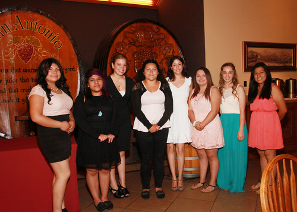

Message from Chamber President
Por Juan Menchaca
Me siento honrado de servir como Presidente de la Cámara de Comercio de Lincoln Heights (LHCC). Sin embargo, estoy muy honrado de trabajar junto a nuestro nuevo equipo ejecutivo y Junta Directiva (BOD) actual.
El LHCC ha logrado mucho en los últimos seis meses. Por ejemplo, la afiliación sigue aumentando y comisiones del Consejo están trabajando duro para lograr sus objetivos estratégicos. El BOD y sus miembros están orgullosos de la reputación positiva y el estado del LHCC que es en gran parte debido al apoyo que presta a la comunidad. En nuestro almuerzo, el 24 de julio en el San Antonio Winery honramos a 8 estudiantes de colegios locales con becas.

Viendo al futuro, creo que el éxito de la LHCC será determinado por un plan de desarrollo estratégico claro y conciso no centrarse sólo en cuestiones de negocios tradicionales, pero sobre la salud financiera general y el bienestar de la comunidad de Lincoln Heights.